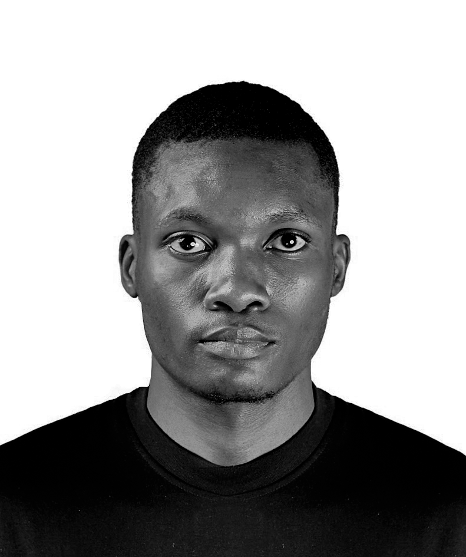

Creative Portfolio

Welcome to my world
Isaac Ashuza
Designer graphique · Créatif · Technologie
Passionné par le design moderne et les nouvelles technologies, j'aime transformer les idées en expériences visuelles créatives, élégantes et innovantes.
UI / UX Design
Graphisme
Technologie
Créativité
Retrouvez-moi sur
Me contacter